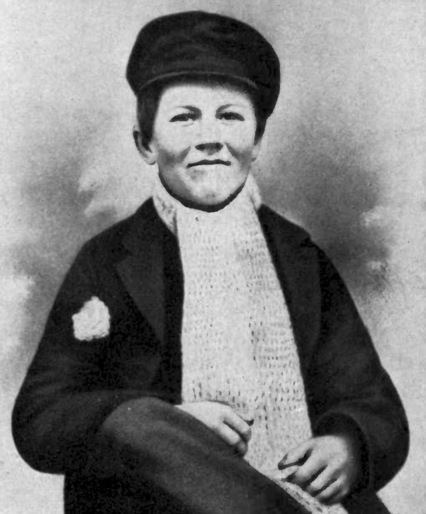

Early Years
Thomas Edison began his career selling candy, newspapers and vegetables on the trains running from Port Huron to Detroit. He turned a $50 a week profit by age 13, most of which went to buying equipment for electric and chemical experiments. He became a telegraph operator after he saved three-year-old Jimmie MacKenzie from being struck by a runaway train. Jimmie's father, station agent J. U. MacKenzie of Mount Clemens, Michigan, was so grateful that he trained Edison as a telegraph operator. Edison's first telegraphy job away from Port Huron was at Stratford Junction, Ontario, on the Grand Trunk Railway. He was held responsible for a near collision. He also studied qualitative analysis and conducted chemical experiments on the train until he left the job.
His first patent was for the electric vote recorder, U.S. Patent 90,646, which was granted on June 1, 1869. Finding little demand for the machine, Edison moved to New York City shortly thereafter. One of his mentors during those early years was a fellow telegrapher and inventor named Franklin Leonard Pope, who allowed the impoverished youth to live and work in the basement of his Elizabeth, New Jersey, home, while Edison worked for Samuel Laws at the Gold Indicator Company. Pope and Edison founded their own company in October 1869, working as electrical engineers and inventors. Edison began developing a multiplex telegraphic system, which could send two messages simultaneously, in 1874.